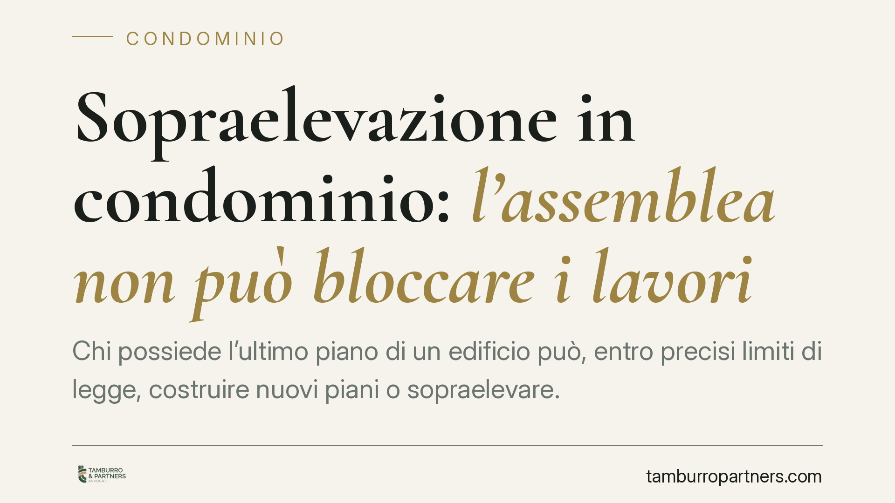

Sopraelevazione in condominio: l'assemblea non può bloccare i lavori
Chi possiede l'ultimo piano di un edificio può, entro precisi limiti di legge, costruire nuovi piani o sopraelevare. È un diritto individuale che l'assemblea condominiale non può cancellare con una delibera. Comprendere i confini di questo potere serve sia a chi intende costruire sia agli altri condòmini che temono danni alla stabilità o all'estetica dell'edificio.

Il diritto di sopraelevazione
L'art. 1127 del Codice civile riconosce al proprietario dell'ultimo piano dell'edificio (o al proprietario esclusivo del lastrico solare) il diritto di elevare nuovi piani o nuove costruzioni.
Si tratta di un diritto potestativo: il titolare può esercitarlo con una propria manifestazione di volontà, senza bisogno del consenso degli altri condòmini. A questa posizione corrisponde una soggezione degli altri partecipanti al condominio, che subiscono l'effetto della scelta altrui senza poterla impedire, salvo che ricorrano i limiti previsti dalla legge.
È un punto centrale: l'assemblea non è chiamata ad autorizzare la sopraelevazione. Il suo eventuale diniego non ha effetto costitutivo né impeditivo sul diritto del singolo.
I tre limiti di legge
Il diritto di sopraelevare non è illimitato. L'art. 1127 c.c. fissa tre confini:
- Condizioni statiche dell'edificio. La sopraelevazione è vietata se le strutture non consentono di sostenerla. È un limite assoluto e insuperabile, posto a tutela della sicurezza.
- Decoro architettonico. Gli altri condòmini possono opporsi se i lavori pregiudicano l'aspetto architettonico dell'edificio.
- Aria e luce. È possibile opporsi quando la nuova costruzione diminuisce notevolmente l'aria o la luce dei piani sottostanti.
La valutazione sulla ricorrenza di questi limiti spetta al giudice, non all'assemblea. Sono accertamenti tecnici e fattuali che presuppongono, di regola, una consulenza (ad esempio sulla capacità portante delle strutture) e che non possono essere risolti con un voto assembleare.
Perché la delibera che vieta i lavori è illegittima
Una delibera con cui l'assemblea pretenda di vietare in radice la sopraelevazione incide su un diritto individuale del singolo condòmino. Su questo tema la giurisprudenza di legittimità distingue tra delibere annullabili e delibere nulle.
Secondo l'orientamento delle Sezioni Unite della Cassazione (sent. n. 9839 del 14 aprile 2021), sono nulle le delibere che incidono su diritti individuali dei condòmini, tra cui quelle che pretendono di sottrarre al singolo facoltà che la legge gli riconosce in via esclusiva. Sono invece annullabili le delibere affette da vizi meno gravi (di procedura, di competenza, di eccesso di potere).
La distinzione ha una conseguenza pratica rilevante sui tempi. La delibera annullabile deve essere impugnata entro il termine di 30 giorni previsto dall'art. 1137 c.c. (decorrente dalla deliberazione, per i presenti dissenzienti o astenuti, e dalla comunicazione del verbale per gli assenti). Superato quel termine, la delibera annullabile diventa definitiva.
La delibera nulla, al contrario, può essere fatta valere in ogni tempo e da chiunque vi abbia interesse. Chi si vede opporre un divieto assembleare alla sopraelevazione dispone quindi di un margine di reazione più ampio.
L'indennità agli altri condòmini
Chi sopraeleva deve corrispondere agli altri condòmini un'indennità, come previsto dall'art. 1127, quarto comma, c.c.
Il criterio non è discrezionale. L'indennità è pari al valore attuale dell'area da occuparsi con la nuova costruzione, diviso per il numero dei piani (compreso quello da edificare) e detratta la quota che spetta allo stesso proprietario che sopraeleva. È una somma dovuta per legge e distinta dagli eventuali danni.
Cosa fare in concreto
Se sei il proprietario dell'ultimo piano e intendi sopraelevare:
- Fai verificare da un tecnico la capacità portante delle strutture prima di ogni altro passo: la statica è il limite non superabile.
- Non attendere un'autorizzazione assembleare che la legge non richiede, ma acquisisci comunque i titoli edilizi e urbanistici necessari presso il Comune.
- Calcola l'indennità dovuta agli altri condòmini secondo il criterio dell'art. 1127 c.c. e predisponine il versamento.
Se sei un condòmino che teme i lavori:
- Verifica con un professionista se ricorra in concreto uno dei tre limiti di legge (statica, decoro, aria e luce): la sola contrarietà non basta.
- Se hai già votato una delibera di divieto, non affidarti solo ad essa: valuta con un legale se agire nel merito davanti al giudice.
- Ricorda i tempi: per i vizi che rendono la delibera annullabile il termine è di 30 giorni; verifica subito la natura del vizio.
---
*Contributo informativo a cura di Tamburro & Partners Avvocati - Avv. Giuseppe Tamburro. Non costituisce parere legale.*
Ogni condominio ha una storia a sé.
Se gestisci un'amministrazione e vuoi un confronto su una specifica questione condominiale, scrivi allo studio. Ti rispondiamo entro un giorno lavorativo.